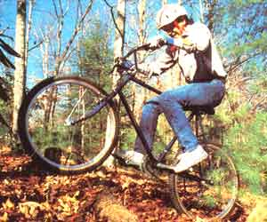

However, mountainbikes can handle really rugged off-road terrain and are capable of doing so at speed. The future of off-road pedal-powered sports, though, will be determined by the level of environmental awareness shown by the riders of today.